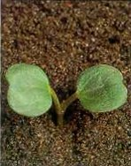

APRÓ (MEZEI, FOLYONDÁR) SZULÁK
CONVOLVULUS ARVENSIS L. (CONAR)
ÉLETFORMA: G3
TERMÉS: A toktermés gömbölyded, kúpos, kétüregű 2-2
maggal. A mag visszás tojás alakú, csúcsa tompa, köldöke töve kissé duzzadt és
ferdén levágott. Háta domború, két hasi oldalon sík, néha kissé beesett, egyenes
élben összefutó. Sötétszürke vagy barnásszürke színű, bibircses vagy
gödörkés, érdes, 4,0-4,5 mm hosszú, 2,4-3,0 mm széles. Ezermagtömege 11-13 g.
Magprodukciója viszonylag nem nagy, 300-550 körül van növényenként. Magvai kemény
héjúak, csírázóképességüket több évig megtartják, 87-99% életképes. Egész
nyáron folyamatosan csírázik.
CSÍRANÖVÉNY: Sziklevelei szív alakúak, kivehetően
erezettek, hosszú nyelűek. Az első lomblevelek szív alakúak.
KIFEJLETT NÖVÉNY: Évelő, szára 30-200 cm hosszú,
földre fekvő vagy felkapaszkodó, hengeres, végig leveles. Levelei változó alakúak:
dárda, tojásdad, elliptikusan ék, nyilas vagy füles vállúak, lekerekített
csúcsúak vagy hegyesek, sötétzöld színűek, fényesek, kopaszok. Virágai a hosszú
kocsányon egyesével vagy párosával ülnek a levelek hónaljában. A kocsány közepe
táján két kis murvalevél van. Tölcséres pártájú virágai fehérek vagy
rózsaszínűek, illatosak. Függőlegesen lefelé haladó földbeli szára és gyökere
2-3 m mélyre is lehatolhat a talajba, vízszintesen mozgó tarackszerű gyökerén sok
rügy van, amely a vegetatív szaporodást szolgálja.
ELTERJEDÉSE: Egész Európában és a világ összes
mérsékelt éghajlatú területein elterjedt. A futóhomok kivételével minden
talajtípuson megtalálható. Fényigényes, a beárnyékolást nem kedveli.
 |